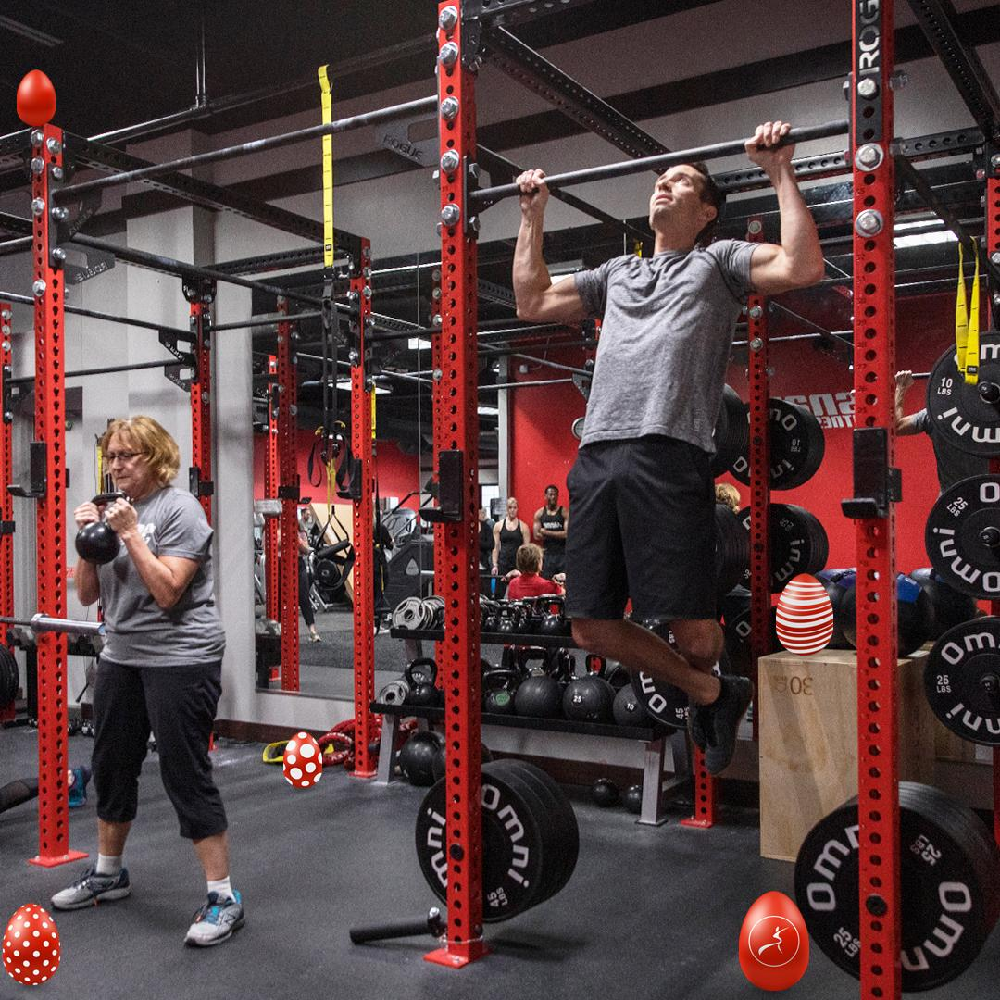

The Best Gym For Your Best Results
 Get back to the gym and back to your best with Relief Gym. Our sparkling clean gyms are waiting for you, with thousands of square feet of premium strength and cardio equipment, turf zones, lap pools, steam rooms and more. And with expert coaching and our app at the ready, you will have 24/7 support to help you get results.
Without a doubt, regular exercise can benefit your health, mind and body. Not only does it boost your energy, increase lean muscle mass, decrease your risk for certain health conditions and help you manage your weight, but it also improves your mood and enables you to live longer. Sounds pretty amazing, right? Now, all you need to do is figure out how to tap into these life-altering benefits. The good news is you have a lot of options when it comes to exercise. From fitness classes and cardio equipment to strength training and other recreational activities, the benefits of gym time are endless.
VIDEO OF THE DAY
Advantages of Gym Workouts
If you have a gym membership or you're thinking about signing up for one, the most important thing to remember is that you have to use it. The advantages of gym workouts are that they provide several different ways to exercise, so going to the gym every day does not have to become boring and tedious.
The U.S. Department of Health and Human Services recommends that adults get a minimum of 150 minutes a week of moderate-intensity or 75 minutes a week of vigorous-intensity aerobic activity. Plus, you should include two or more days of muscle-strengthening exercises that involve all major muscle groups.
At first, this probably seems like a lot of exercise. However, if you spread those minutes out over the course of a week, you'll soon see just how easy it is to fit it in, especially if you're going to the gym every day.
Types of Gym Workouts
Depending on the size of your fitness facility, you may have everything you need under one roof to get the awesome benefits of gym workouts. This includes:
- Cardio equipment. Most gyms are home to a few different pieces of cardio equipment such as stair climbers, rowing machines, spin bikes, recumbent bikes and treadmills. As long as you are healthy and able to participate in most types of exercise, consider alternating between these cardio machines to get your 30-plus minutes of cardio exercise, three to five days a week.
- Strength training. Heading to the weight room at least two to three days each week will help keep your muscles strong, your bones healthy and allow you to control your weight. Focus on full-body workouts with exercises for each of the major muscle groups.
- Fitness classes.Access to group fitness classes is one of the advantages of gym workouts. Not only do you get the heart-pumping, muscle-building benefits of the exercises, but you also tap into the motivation and encouragement of working out with other people.
- Other recreational activities. Some larger facilities offer additional recreational activities such as swimming, racquetball, basketball, pickleball or an indoor track. Consider swapping out a few of these activities for your regular cardio workouts.
Benefits of Gym Workouts
Going to the gym every day can help improve your cardiovascular system, strengthen your muscles, help you maintain your weight, boost your mental health and decrease the odds that you'll develop other health conditions.
Exercising daily strengthens your heart and allows it to pump more efficiently with less strain. It also keeps your blood pressure and blood sugar levels in the normal range and keeps your cholesterol levels in check. Plus, it may help manage the symptoms of depression and anxiety.
Daily gym workouts may also lower your risk of developing certain conditions such as type 2 diabetes, metabolic syndrome and osteoporosis.
Be Aware of Overtraining
Getting to the gym on a regular basis can do wonders for your health. However, too much of a good thing can also have negative effects, especially if you're not careful.
If you exercise daily, make sure to pay attention to any signs and symptoms of overtraining, including excess fatigue, a decrease in your performance, problems with sleep and recurring injuries. If you notice these things happening, it might be time to assess your workouts and scale back on the number of days you're going to the gym.